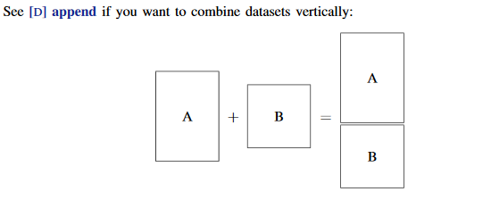

Panel data¶
Recap: macros and scalars¶
In this recap, I will present a more detailed introduction to macros and scalars. The key idea of macros is that when using a macro in a function or a command, the macro name is replaced with the contents of the macro before anything else is done. This means that the macro constents are replaced before any command is executed. Thus, you could say the macro is a “variable like” wrapper for stuff. As mentioned in the Stata basics session, Stata has two types of macros:
Local macros that exist for the current Stata program / do-file.
Global macros that exist until you exit Stata.
In practice, this means that if you use locals within a Stata do-file, they are not preserved after the do-file contents are executed.
There are two ways to declare both local and global macros. The difference is quite important: evaluation. Let’s start with a demonstartion:
local number 1 + 1
local number_ = 1 + 1
di "`number' vs `number_'"
1 + 1 vs 2
Here the macro contents are inserted into as a string to be displayed. When we declared the local number_, it was evalueted when the local was declared, but the local number contains the expression 1+1. Hoewver, notice the difference when we do not display the macros as a string:
di `number' " vs " `number_'
2 vs 2
Even though number was not evaluated when we made the macro, it was evalueted when we called display.
Scalars (or scalar variables) are close to both actual Stata variables (columns) and macros. Scalars can store single single numbers or strings. The crucial difference is that scalars can not be used to store expressions that we want to be evaluated later:
sysuse auto
scalar temp = "reg mpg weight"
(1978 Automobile Data)
qui capture temp
di "The return code was " _rc
di temp
The return code was 199
reg mpg weight
desc
Contains data from C:\Program Files (x86)\Stata15MP\ado\base/a/auto.dta
obs: 74 1978 Automobile Data
vars: 12 13 Apr 2016 17:45
size: 3,182 (_dta has notes)
---------------------------------------------------------------------------------------------------------------------------------------------------------------------------------------------------------------------------------------------------------------
storage display value
variable name type format label variable label
---------------------------------------------------------------------------------------------------------------------------------------------------------------------------------------------------------------------------------------------------------------
make str18 %-18s Make and Model
price int %8.0gc Price
mpg int %8.0g Mileage (mpg)
rep78 int %8.0g Repair Record 1978
headroom float %6.1f Headroom (in.)
trunk int %8.0g Trunk space (cu. ft.)
weight int %8.0gc Weight (lbs.)
length int %8.0g Length (in.)
turn int %8.0g Turn Circle (ft.)
displacement int %8.0g Displacement (cu. in.)
gear_ratio float %6.2f Gear Ratio
foreign byte %8.0g origin Car type
---------------------------------------------------------------------------------------------------------------------------------------------------------------------------------------------------------------------------------------------------------------
Sorted by: foreign
local temp "reg mpg weight"
`temp'
di "`temp'"
Source | SS df MS Number of obs = 74
-------------+---------------------------------- F(1, 72) = 134.62
Model | 1591.9902 1 1591.9902 Prob > F = 0.0000
Residual | 851.469256 72 11.8259619 R-squared = 0.6515
-------------+---------------------------------- Adj R-squared = 0.6467
Total | 2443.45946 73 33.4720474 Root MSE = 3.4389
------------------------------------------------------------------------------
mpg | Coef. Std. Err. t P>|t| [95% Conf. Interval]
-------------+----------------------------------------------------------------
weight | -.0060087 .0005179 -11.60 0.000 -.0070411 -.0049763
_cons | 39.44028 1.614003 24.44 0.000 36.22283 42.65774
------------------------------------------------------------------------------
reg mpg weight
Perhaps the best rule for you to remember about macros and scalars is:
Note
The sign “=” forces evaluation (execution) of an expression for local/global macros. It is also required for scalars.
So should you use macros or scalars? Depends on the situation. Macros are great for saving model equations before execution and for some macro functions. Scalars are great for instance simulation parameters and some other tasks that we will cover later.
Next, let’s consider some macro functions. In this example (which you will need in the problem set), we will save a list of file names in a folder to a local macro. This is done with the macro function dir. I’ve made the following initializations beforehand:
Download Aofp data from MyCourses
Place the data in a new folder called “rawdata” in your working directory
Unzip the aofp.zip file
cd Z:/econ-c4200
local files: dir "rawdata/aofp" files "*.txt"
Z:\econ-c4200
If the code above shows that we need to use the char : after the macro name if we are to use a macro function. The first argument of the macro function dir is the folder path and the second argument is either “files” or “directories”, depending if we want to make a list of files or folders. The third parameter is the name pattern for the files we want to use in the command.
Note
The sign “*” is a wildcard. When you use it in a command, it is interpreted as anything / all. In our example, “*.txt” means all files that end in “.txt” (all text files).
There are other macro functions too. For the full list, see help macro. Most importantly, you can use the macro function word of command:
local 50th_file : word 50 of `files'
di "`50th_file'"
salvia_0050.txt
Before importing all these files at once, I will introduce you to loops in programming and in Stata.
Loops in Stata¶
If you are not familiar with the concept of loops, watch the folling video and look into these web-materials.
Stata, like any other programming language, of course has loops. Loops are one of the most useful ways to write efficient and readable code. They are also almost necessary for some tasks (as you will learn in PS1). In principle, there are two differenct types of loops:
While-loops where the user has specified a general stop condition
For-loops where the user has specified a range stop condition
In most programming languages, for-loops are just wrappers for while-loops. The Stata variants for these loops is:
while
while exp {
stata_commands
}
foreach
foreach lname {in|of listtype} list {
commands referring to `lname'
}
forvalues
forvalues lname = range {
Stata commands referring to `lname'
}
For foreach the argument in is used for all lists and the argument of for specific lists such as local list or variable list.
Let’s see the loops in action. We will loop over the list of file names:
local bool = 0
local i = 1.00
while `bool' == 0 {
local file_`i' : word `i' of `files'
di "`file_`i''"
if `i' > 11 {
local ++bool
}
local ++i
}
salvia_0001.txt
salvia_0002.txt
salvia_0003.txt
salvia_0004.txt
salvia_0005.txt
salvia_0006.txt
salvia_0007.txt
salvia_0008.txt
salvia_0009.txt
salvia_0010.txt
salvia_0011.txt
salvia_0012.txt
In the above code, the local bool is the boolean expression for our loop. When we come to the 7th iteration, the if-condition is satisfied and we flip the value of bool to 1. If you are not familiar with boolean / logical expressions, read the following Wikipedia page about them.
Notice how we use local ++bool and local ++i to increment the values of our locals. If we wanted to decrease their values, we could have used local --bool and local --i instead.
local i = 1.00
foreach file of local files {
di "`file'"
if `i' > 5 {
continue, break
}
local ++i
}
forvalues i = 1/100 {
local file_`i' : word `i' of `files'
di "`file_`i''"
if `i' > 5 {
continue, break
}
}
salvia_0001.txt
salvia_0002.txt
salvia_0003.txt
salvia_0004.txt
salvia_0005.txt
salvia_0006.txt
salvia_0001.txt
salvia_0002.txt
salvia_0003.txt
salvia_0004.txt
salvia_0005.txt
salvia_0006.txt
The for-loops iterate over specified values or a specified range. You can exit the loop prematurely with the continue, break command.
Formatting time variables in Stata¶
Stata has a specific variable type and formatting for time variables. In Stata, all time variables are numerical variables relative to 1st of January 1960. You can find all of the Stata time functions from the Stata documentation by typing help datetime to the command line. However, the most important datetime functions are listed below:
date(s1,s2)monthly(s1,s2)quarterly(s1,s2)yearly(s1,s2)
All of the above functions work the same way: s1 is an input string (most usually a string variable) and s2 is format type. For example, s2 could be:
“MDY” or Month Day Year or “03012021”
“DMY” or Day Month Year or “01032021”
“QY” or Quarter Year or “q12021”
“MY” or Quarter Year or “12M2021”
As mentioned, Stata saves all time values in numbers relative to 1.1.1960. This is called the Stata Internal Format and it’s diffrentet from the wat we write / format dates. The latter is called Human Readable Format. In practice, we will need to format all of your time variables after generating them with the format varname %format command. The time HRF types are
td
tm
tq
Notice that for years, SIF = HIF. I will next demonstrate:
qui {
clear
set obs 100000
gen date = _n
gen month = _n
gen quarter = _n
format date %td
format month %tm
format quarter %tq
}
%browse 10
| date | month | quarter | |
|---|---|---|---|
| 1 | 02jan1960 | 1960m2 | 1960q2 |
| 2 | 03jan1960 | 1960m3 | 1960q3 |
| 3 | 04jan1960 | 1960m4 | 1960q4 |
| 4 | 05jan1960 | 1960m5 | 1961q1 |
| 5 | 06jan1960 | 1960m6 | 1961q2 |
| 6 | 07jan1960 | 1960m7 | 1961q3 |
| 7 | 08jan1960 | 1960m8 | 1961q4 |
| 8 | 09jan1960 | 1960m9 | 1962q1 |
| 9 | 10jan1960 | 1960m10 | 1962q2 |
| 10 | 11jan1960 | 1960m11 | 1962q3 |
Other useful datetime functions are the following:
mofd(s1) or Month of Date
qofd(s1) or Quarter of Date
yofd(s1) or Year of Date
I will demonstrate:
drop month quarter
gen month = mofd(date)
gen quarter = qofd(date)
gen year = yofd(date)
%browse 10 if month > 1
| date | month | quarter | year | |
|---|---|---|---|---|
| 60 | 01mar1960 | 2 | 0 | 1960 |
| 61 | 02mar1960 | 2 | 0 | 1960 |
| 62 | 03mar1960 | 2 | 0 | 1960 |
| 63 | 04mar1960 | 2 | 0 | 1960 |
| 64 | 05mar1960 | 2 | 0 | 1960 |
| 65 | 06mar1960 | 2 | 0 | 1960 |
| 66 | 07mar1960 | 2 | 0 | 1960 |
| 67 | 08mar1960 | 2 | 0 | 1960 |
| 68 | 09mar1960 | 2 | 0 | 1960 |
| 69 | 10mar1960 | 2 | 0 | 1960 |
Notice that now we are seeing the SIF formats and not HIF formats. Let’s change this:
format month %tm
format quarter %tq
%browse 5 if month > 1
| date | month | quarter | year | |
|---|---|---|---|---|
| 60 | 01mar1960 | 1960m3 | 1960q1 | 1960 |
| 61 | 02mar1960 | 1960m3 | 1960q1 | 1960 |
| 62 | 03mar1960 | 1960m3 | 1960q1 | 1960 |
| 63 | 04mar1960 | 1960m3 | 1960q1 | 1960 |
| 64 | 05mar1960 | 1960m3 | 1960q1 | 1960 |
Sometimes we need to check our date or speficy datetime moments manually. For this, the most usefull commands are:
tm(month)tq(quarter)td(date)
Again, it’s best if I demonstrate:
%browse 5 if month == tm(2000m1)
| date | month | quarter | year | |
|---|---|---|---|---|
| 14610 | 01jan2000 | 2000m1 | 2000q1 | 2000 |
| 14611 | 02jan2000 | 2000m1 | 2000q1 | 2000 |
| 14612 | 03jan2000 | 2000m1 | 2000q1 | 2000 |
| 14613 | 04jan2000 | 2000m1 | 2000q1 | 2000 |
| 14614 | 05jan2000 | 2000m1 | 2000q1 | 2000 |
%browse 5 if quarter == tq(1995q1)
| date | month | quarter | year | |
|---|---|---|---|---|
| 12784 | 01jan1995 | 1995m1 | 1995q1 | 1995 |
| 12785 | 02jan1995 | 1995m1 | 1995q1 | 1995 |
| 12786 | 03jan1995 | 1995m1 | 1995q1 | 1995 |
| 12787 | 04jan1995 | 1995m1 | 1995q1 | 1995 |
| 12788 | 05jan1995 | 1995m1 | 1995q1 | 1995 |
%browse if date == td(01mar2021)
| date | month | quarter | year | |
|---|---|---|---|---|
| 22340 | 01mar2021 | 2021m3 | 2021q1 | 2021 |
We could also misspecify:
%browse if date == tm(2021m2)
| date | month | quarter | year | |
|---|---|---|---|---|
| 733 | 03jan1962 | 1962m1 | 1962q1 | 1962 |
%browse if month == tm(2021m2)
| date | month | quarter | year | |
|---|---|---|---|---|
| 22312 | 01feb2021 | 2021m2 | 2021q1 | 2021 |
| 22313 | 02feb2021 | 2021m2 | 2021q1 | 2021 |
| 22314 | 03feb2021 | 2021m2 | 2021q1 | 2021 |
| 22315 | 04feb2021 | 2021m2 | 2021q1 | 2021 |
| 22316 | 05feb2021 | 2021m2 | 2021q1 | 2021 |
| 22317 | 06feb2021 | 2021m2 | 2021q1 | 2021 |
| 22318 | 07feb2021 | 2021m2 | 2021q1 | 2021 |
| 22319 | 08feb2021 | 2021m2 | 2021q1 | 2021 |
| 22320 | 09feb2021 | 2021m2 | 2021q1 | 2021 |
| 22321 | 10feb2021 | 2021m2 | 2021q1 | 2021 |
| 22322 | 11feb2021 | 2021m2 | 2021q1 | 2021 |
| 22323 | 12feb2021 | 2021m2 | 2021q1 | 2021 |
| 22324 | 13feb2021 | 2021m2 | 2021q1 | 2021 |
| 22325 | 14feb2021 | 2021m2 | 2021q1 | 2021 |
| 22326 | 15feb2021 | 2021m2 | 2021q1 | 2021 |
| 22327 | 16feb2021 | 2021m2 | 2021q1 | 2021 |
| 22328 | 17feb2021 | 2021m2 | 2021q1 | 2021 |
| 22329 | 18feb2021 | 2021m2 | 2021q1 | 2021 |
| 22330 | 19feb2021 | 2021m2 | 2021q1 | 2021 |
| 22331 | 20feb2021 | 2021m2 | 2021q1 | 2021 |
| 22332 | 21feb2021 | 2021m2 | 2021q1 | 2021 |
| 22333 | 22feb2021 | 2021m2 | 2021q1 | 2021 |
| 22334 | 23feb2021 | 2021m2 | 2021q1 | 2021 |
| 22335 | 24feb2021 | 2021m2 | 2021q1 | 2021 |
| 22336 | 25feb2021 | 2021m2 | 2021q1 | 2021 |
| 22337 | 26feb2021 | 2021m2 | 2021q1 | 2021 |
| 22338 | 27feb2021 | 2021m2 | 2021q1 | 2021 |
| 22339 | 28feb2021 | 2021m2 | 2021q1 | 2021 |
Combining data sets - Introduction to append¶
Previously, you were introduced to the merge command that can be used to combine data sets based on some keys. The append is a similar command that works in the opposite direction. Recall that merge worked “horizontally”. append instead works vertically.

It requires no keys or identifiers. If the two data sets have different variables, the default option of append is include all of them and replace the observations from the other data set with missing values. Observations under the same variable names are under the same variable/column.
Let’s demonstrate by splitting our data in half and then merging it back:
gsort date
save "Z:/econ-c4200/data/both_halves", replace
preserve
keep if _n <= _N/2
save "Z:/econ-c4200/data/first_half.dta", replace
restore
drop if _n <= _N/2
count
append using "Z:/econ-c4200/data/first_half"
count
gsort date
cf _all using "Z:/econ-c4200/data/both_halves"
rm "Z:/econ-c4200/data/both_halves.dta"
rm "Z:/econ-c4200/data/first_half.dta"
(note: file Z:/econ-c4200/data/both_halves.dta not found)
file Z:/econ-c4200/data/both_halves.dta saved
(50,000 observations deleted)
(note: file Z:/econ-c4200/data/first_half.dta not found)
file Z:/econ-c4200/data/first_half.dta saved
(50,000 observations deleted)
50,000
100,000
Above, we use the following new commands:
preserve- saves the current data in memory temporarilyrestore- loads the data saved bypreserveback to memory
These are very useful for doing stuff that require dropping / modifying data for temporary use. However, it’s an ugly solution in comparison to data frames that exist nowadays. We will not cover that in these courses.
cf - verifies that two files are equal.
rm - removes files.
Panel data in Stata¶
During this course, we will continue with the pharmaceuticals data from Finland. However, this time you will have over 300 files instead of 1. We will construct the full (panel) data set in the first Problem Set.
I’ve already done this way back. The complete product should look something like this:
use data/salvia, clear
desc
Contains data from data/salvia.dta
obs: 3,282,897
vars: 56 2 Mar 2021 17:17
size: 2,511,416,205
---------------------------------------------------------------------------------------------------------------------------------------------------------------------------------------------------------------------------------------------------------------
storage display value
variable name type format label variable label
---------------------------------------------------------------------------------------------------------------------------------------------------------------------------------------------------------------------------------------------------------------
typecode byte %10.0g Typecode
vnr long %10.0g VNR
pricing_code str1 %9s Pricing code
register_entr~e str5 %9s Reimbursement level and prescription process
ma_condition str3 %9s Market authorization restrictions
in_exit str2 %9s 'PU' if product is exiting the market
ppp double %10.0g PPP Salvia
prp double %10.0g PRP Salvia
prp_vat double %10.0g PRP inc. VAT
change_code str2 %9s Changes in product characteristics
shelf_life_code str1 %9s Shelf life code
product_name str43 %43s Product name
strength str63 %63s Strength
dosage_form str66 %66s Dosage form
mah_code str7 %9s Market authorization holder
pack_size str16 %16s Pack size and amount of added water
reimbursement~s str67 %67s Disease codes for special reimbursement
atc str9 %9s ATC5 group
ean str13 %13s EAN code for the product
wholesaler_1 str1 %9s Tamro or KD Oriala
order_code1 str7 %9s Order code for wholesaler_1
wholesaler_2 str1 %9s Tamro or KD Oriala
order_code2 str7 %9s Order code for wholesaler_2
vat_code str1 %9s Level of VAT for the product
special_condi~e str3 %9s Restrictions to reimbursement
product_name_~h str1 %9s Product name in Swedish
dosage_form_f~h str84 %84s Dosage form in Finnish
dosage_form_s~h str85 %85s Dosage form in Swedish
pack_size_num~c str8 %9s Numeric part of pack size
pack_size_non~c str16 %16s Non-numeric part of pack size
ddd_numeric str6 %9s Numeric part of ddd
ddd_non_numeric str3 %9s Non-numeric part of ddd
substitution_~p double %10.0g Digits as: 00 + XXXX (Fimea code) + XXXX (pack size)
within_price_~r str1 %9s Product is within the price corridor
min_price long %10.0g Lower limit for the price corridor
max_price long %10.0g Upper limit for the price corridor
molecules str99 %99s Molecule list, comma separated
ppp_hila double %10.0g The reasonable pharmacy purchasing price - price ceiling
ppp_hila_begins str10 %10s Start of reasonable ppp
ppp_hila_ends str10 %10s End of reasonable price
product_group int %10.0g Type of product
stamp str29 %29s
reference_price double %10.0g Reference price
timestamp str12 %12s
date int %td
month int %tm
quarter int %tq
year int %9.0g
nvals int %9.0g
rs_status byte %9.0g Reimbursement status
substitution_~s byte %9.0g Substitution status
rx_status byte %9.0g Prescription required
nvals_rs int %9.0g
nvals_subs int %9.0g
nvals_rx int %9.0g
atc_1 str1 %9s
---------------------------------------------------------------------------------------------------------------------------------------------------------------------------------------------------------------------------------------------------------------
Sorted by: quarter rx_status
Next, let’s generate our date variable (two price lists per month).
tab year
year | Freq. Percent Cum.
------------+-----------------------------------
2003 | 130,776 3.98 3.98
2004 | 176,780 5.38 9.37
2005 | 173,856 5.30 14.66
2006 | 186,128 5.67 20.33
2007 | 186,156 5.67 26.00
2008 | 186,071 5.67 31.67
2009 | 191,334 5.83 37.50
2010 | 196,074 5.97 43.47
2011 | 197,947 6.03 49.50
2012 | 200,902 6.12 55.62
2013 | 201,725 6.14 61.77
2014 | 205,176 6.25 68.02
2015 | 207,325 6.32 74.33
2016 | 211,096 6.43 80.76
2017 | 219,552 6.69 87.45
2018 | 94,164 2.87 90.32
2019 | 69,098 2.10 92.42
2020 | 238,821 7.27 99.70
2021 | 9,916 0.30 100.00
------------+-----------------------------------
Total | 3,282,897 100.00
The command to declare the data set to a panel data set is xtset. The first argument is the cross-section variable and the second argument is the time series variable.
xtset vnr date
xtdescribe
panel variable: vnr (unbalanced)
time variable: date, 01apr2003 to 01jan2021, but with gaps
delta: 1 day
vnr: 3, 4, ..., 9909287 n = 22083